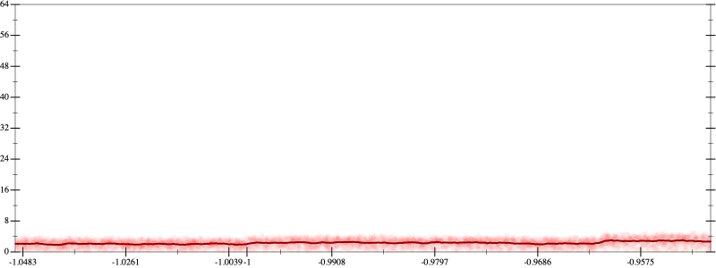
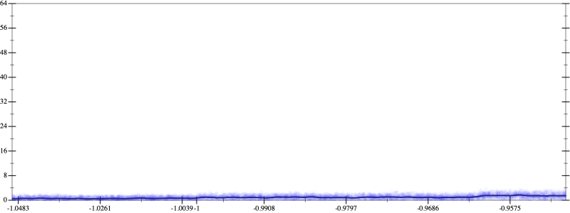
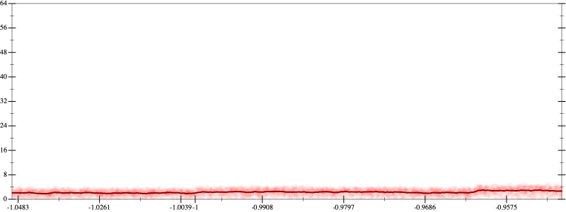
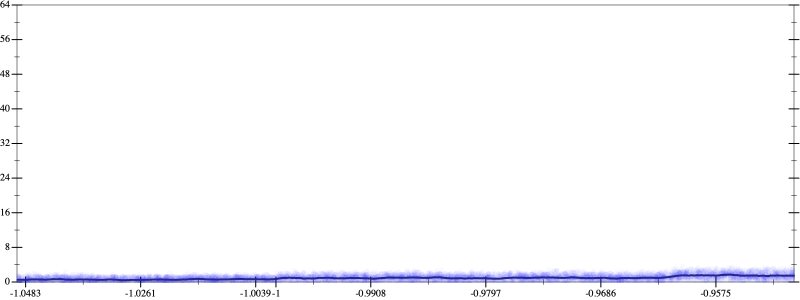

Initial program 2.3
\[\left(1.875 \cdot x + -8.75 \cdot \left(\left(x \cdot x\right) \cdot x\right)\right) + 7.875 \cdot \left(\left(\left(\left(x \cdot x\right) \cdot x\right) \cdot x\right) \cdot x\right)\]
- Using strategy
rm Applied add-log-exp2.3
\[\leadsto \left(1.875 \cdot x + -8.75 \cdot \left(\left(x \cdot x\right) \cdot x\right)\right) + \color{blue}{\log \left(e^{7.875 \cdot \left(\left(\left(\left(x \cdot x\right) \cdot x\right) \cdot x\right) \cdot x\right)}\right)}\]
Applied add-log-exp2.3
\[\leadsto \color{blue}{\log \left(e^{1.875 \cdot x + -8.75 \cdot \left(\left(x \cdot x\right) \cdot x\right)}\right)} + \log \left(e^{7.875 \cdot \left(\left(\left(\left(x \cdot x\right) \cdot x\right) \cdot x\right) \cdot x\right)}\right)\]
Applied sum-log2.3
\[\leadsto \color{blue}{\log \left(e^{1.875 \cdot x + -8.75 \cdot \left(\left(x \cdot x\right) \cdot x\right)} \cdot e^{7.875 \cdot \left(\left(\left(\left(x \cdot x\right) \cdot x\right) \cdot x\right) \cdot x\right)}\right)}\]
Applied simplify1.8
\[\leadsto \log \color{blue}{\left({\left(e^{7.875}\right)}^{\left({x}^{3} \cdot \left(x \cdot x\right)\right)} \cdot \left(e^{1.875 \cdot x} \cdot {\left(e^{-8.75}\right)}^{\left({x}^{3}\right)}\right)\right)}\]
- Using strategy
rm Applied pow-unpow1.6
\[\leadsto \log \left(\color{blue}{{\left({\left(e^{7.875}\right)}^{\left({x}^{3}\right)}\right)}^{\left(x \cdot x\right)}} \cdot \left(e^{1.875 \cdot x} \cdot {\left(e^{-8.75}\right)}^{\left({x}^{3}\right)}\right)\right)\]
- Using strategy
rm Applied pow-unpow1.0
\[\leadsto \log \left(\color{blue}{{\left({\left({\left(e^{7.875}\right)}^{\left({x}^{3}\right)}\right)}^{x}\right)}^{x}} \cdot \left(e^{1.875 \cdot x} \cdot {\left(e^{-8.75}\right)}^{\left({x}^{3}\right)}\right)\right)\]
- Using strategy
rm Applied add-cube-cbrt0.9
\[\leadsto \log \left({\left({\left({\color{blue}{\left(\left(\sqrt[3]{e^{7.875}} \cdot \sqrt[3]{e^{7.875}}\right) \cdot \sqrt[3]{e^{7.875}}\right)}}^{\left({x}^{3}\right)}\right)}^{x}\right)}^{x} \cdot \left(e^{1.875 \cdot x} \cdot {\left(e^{-8.75}\right)}^{\left({x}^{3}\right)}\right)\right)\]
Applied unpow-prod-down0.9
\[\leadsto \log \left({\left({\color{blue}{\left({\left(\sqrt[3]{e^{7.875}} \cdot \sqrt[3]{e^{7.875}}\right)}^{\left({x}^{3}\right)} \cdot {\left(\sqrt[3]{e^{7.875}}\right)}^{\left({x}^{3}\right)}\right)}}^{x}\right)}^{x} \cdot \left(e^{1.875 \cdot x} \cdot {\left(e^{-8.75}\right)}^{\left({x}^{3}\right)}\right)\right)\]
 
